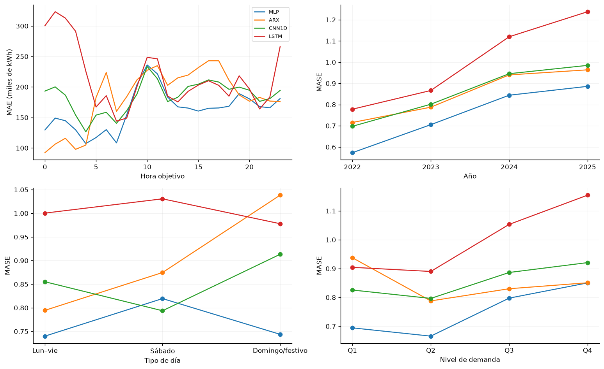
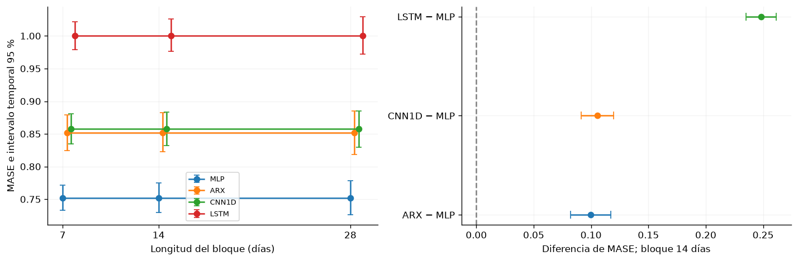
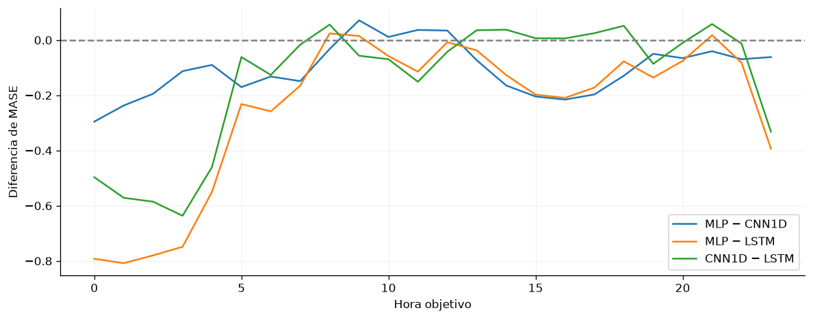
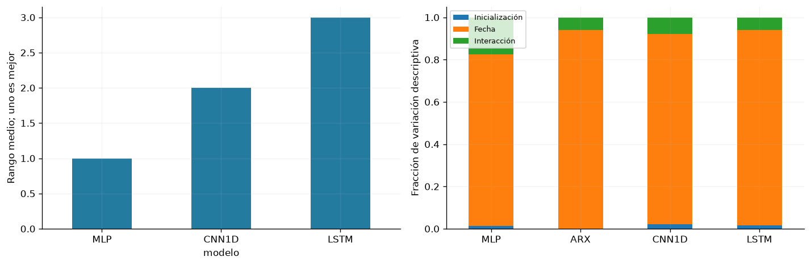
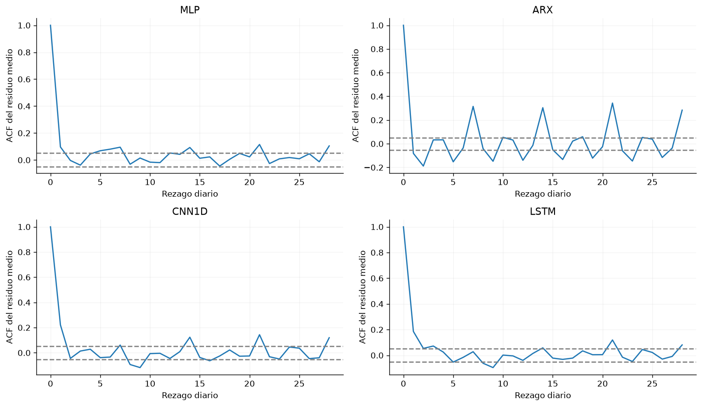
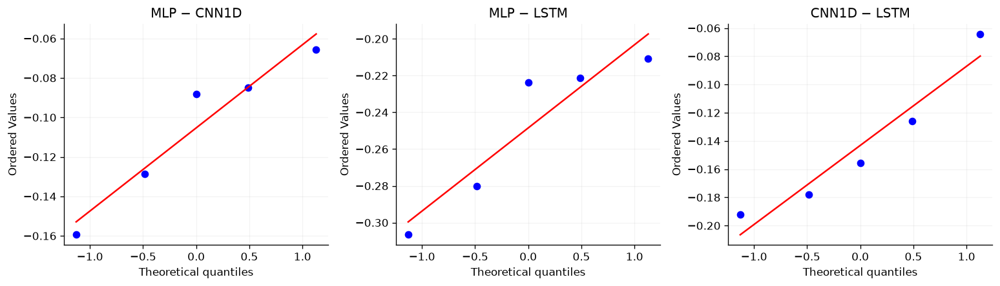

10.9. Evaluación temporal y diagnósticos#
El análisis utiliza los mismos 1.461 días y las cinco realizaciones de cada configuración. La unidad temporal es el origen diario con sus 24 errores. Se distingue variación entre semillas, entre fechas y entre segmentos; ninguna se interpreta como una nueva muestra independiente de mercados.
from pathlib import Path
import json,hashlib,itertools
import numpy as np
import pandas as pd
import matplotlib
matplotlib.use('Agg')
import matplotlib.pyplot as plt
from scipy import stats
from statsmodels.stats.multitest import multipletests
from IPython.display import display
ROOT=next(p for p in [Path.cwd(),*Path.cwd().parents] if (p/'results/jbook/modelos_actualizados.json').exists())
procedencia=json.loads((ROOT/'results/jbook/modelos_actualizados.json').read_text(encoding='utf-8'))
SHA=procedencia['commit'];SNAP=ROOT/'results/repositorio'/SHA
C=SNAP/'results/consolidado';OUT=ROOT/'results/jbook/modelos_actuales';OUT.mkdir(parents=True,exist_ok=True)
registro=json.loads((C/'modelos.json').read_text(encoding='utf-8'))
modelos=['mlp','arx_lineal','cnn1d','lstm'];neuronales=['mlp','cnn1d','lstm']
etiquetas={'mlp':'MLP','arx_lineal':'ARX','cnn1d':'CNN1D','lstm':'LSTM','ingenuo_24h':'Ingenuo diario','ingenuo_168h':'Ingenuo semanal'}
plt.rcParams.update({'figure.figsize':(10,4),'axes.spines.top':False,'axes.spines.right':False,'axes.grid':True,'grid.alpha':.15})
importacion=json.loads((SNAP/'IMPORTACION.json').read_text(encoding='utf-8'))
huellas={x['archivo']:x for x in importacion['archivos']}
indice=pd.read_csv(C/'indice_artefactos_v3_v4.csv')
assert len(indice)==2304 and not indice.archivo.duplicated().any()
for fila in indice.itertuples():
p=SNAP/fila.archivo
assert p.stat().st_size==fila.bytes
assert hashlib.sha256(p.read_bytes()).hexdigest()==fila.sha256==huellas[fila.archivo]['sha256']
runs=[];pilotos=[];confirmaciones=[];filtros=[];pred={};carpetas={};escaladores={};historias={};y=None;origen=None
for nombre in modelos:
r=registro[nombre];carpeta=SNAP/'results'/r['ejecucion']
seleccion=r['configuracion']['id']
pp=pd.read_csv(carpeta/'piloto.csv');pp=pp.loc[(pp.modelo==nombre)&(pp.configuracion==seleccion)]
assert len(pp)==20 and not pp.duplicated(['semilla','fold']).any()
pilotos.append(pp)
pila=[]
for a in sorted(r['artefactos'],key=lambda a:a['semilla']):
met=json.loads((SNAP/a['metricas']).read_text(encoding='utf-8'))
esc=json.loads((SNAP/a['escaladores']).read_text(encoding='utf-8'))
historia=pd.DataFrame(json.loads((SNAP/a['historial']).read_text(encoding='utf-8')))
assert met['semilla']==a['semilla'] and met['params']==r['configuracion']['params']
assert met['configuracion']==seleccion and len(historia)==met['epocas']
assert historia.epoca.tolist()==list(range(1,len(historia)+1))
assert met['mejor_epoca']==int(historia.val_loss.idxmin()+1)
assert pd.Timestamp(esc['fin_ajuste'])<pd.Timestamp('2022-01-01',tz='America/Bogota')
with np.load(SNAP/a['predicciones'],allow_pickle=False) as z:
if y is None:y=z['y'].astype(float);origen=z['origen'].copy()
assert np.array_equal(y,z['y']) and np.array_equal(origen,z['origen'])
assert z['yhat'].shape==y.shape and np.isfinite(z['yhat']).all()
pila.append(z['yhat'].astype(float))
runs.append(met);historias[(nombre,a['semilla'])]=historia
carpetas[(nombre,a['semilla'])]=SNAP/a['pesos']
escaladores[(nombre,a['semilla'])]=esc
pred[nombre]=np.stack(pila)
piloto=pd.concat(pilotos,ignore_index=True);runs=pd.DataFrame(runs)
assert len(runs)==20 and not runs.duplicated(['modelo','semilla']).any()
assert all(set(d.semilla)==set(range(1000,1005)) for _,d in runs.groupby('modelo'))
fechas=pd.to_datetime(origen,unit='ns',utc=True).tz_convert('America/Bogota')
assert fechas.equals(pd.date_range('2022-01-01','2025-12-31',freq='D',tz='America/Bogota'))
assert y.shape==(1461,24) and np.isfinite(y).all()
escala=float(escaladores[('mlp',1000)]['escala_mase'])
loss_h={};loss_d={};residuos={};calculadas=[]
for nombre in modelos:
errores=pred[nombre]-y[None,:,:]
loss_h[nombre]=np.abs(errores).mean(axis=0)/escala
loss_d[nombre]=loss_h[nombre].mean(axis=1)
residuos[nombre]=errores[0]
for j,semilla in enumerate(range(1000,1005)):
e=errores[j];mae=np.abs(e).mean();rmse=np.sqrt(np.mean(e**2))
m=dict(modelo=nombre,semilla=semilla,MASE=mae/escala,MAE=mae,RMSE=rmse,R2=1-np.mean(e**2)/np.var(y),sesgo=e.mean(),sMAPE=(200*np.abs(e)/(np.abs(pred[nombre][j])+np.abs(y))).mean())
original=runs.loc[(runs.modelo==nombre)&(runs.semilla==semilla)].iloc[0]
assert np.allclose([m[k] for k in ['MASE','MAE','RMSE','sMAPE']],[original[k] for k in ['MASE','MAE','RMSE','sMAPE']],rtol=2e-6)
calculadas.append(m)
calculadas=pd.DataFrame(calculadas)
seleccion_publicada=pd.read_csv(C/'modelos_seleccionados.csv').set_index('modelo')
assert np.allclose(calculadas.groupby('modelo').MASE.mean().sort_index(),seleccion_publicada.MASE_prueba.sort_index())
referencias=json.loads((C/'referencias_test.json').read_text(encoding='utf-8'))
filas=[]
for nombre in modelos:
d=calculadas.loc[calculadas.modelo==nombre];media=d.MASE.mean();sd=d.MASE.std(ddof=1);ancho=stats.t.ppf(.975,len(d)-1)*sd/np.sqrt(len(d))
filas.append(dict(familia=nombre,Modelo=etiquetas[nombre],n=len(d),MASE=media,DE=sd,IC95_inf=media-ancho,IC95_sup=media+ancho,MAE_kWh=d.MAE.mean(),RMSE_kWh=d.RMSE.mean(),sMAPE_pct=d.sMAPE.mean(),R2=d.R2.mean(),sesgo_kWh=d.sesgo.mean(),parametros=int(runs.loc[runs.modelo==nombre,'n_parametros'].iloc[0]),ajuste_s=float(runs.loc[runs.modelo==nombre,'segundos'].median())))
for nombre,m in referencias.items():
filas.append(dict(familia=nombre,Modelo=etiquetas[nombre],n=1,MASE=m['MASE'],DE=np.nan,IC95_inf=np.nan,IC95_sup=np.nan,MAE_kWh=m['MAE'],RMSE_kWh=m['RMSE'],sMAPE_pct=m['sMAPE'],R2=1-m['RMSE']**2/np.var(y),sesgo_kWh=np.nan,parametros=0,ajuste_s=np.nan))
benchmark=pd.DataFrame(filas).sort_values('MASE').reset_index(drop=True);benchmark.insert(0,'rango',np.arange(1,len(benchmark)+1))
benchmark.to_csv(OUT/'benchmark.csv',index=False);benchmark.to_csv(ROOT/'book/benchmark_modelos.csv',index=False)
calculadas.to_csv(OUT/'metricas_desde_predicciones.csv',index=False)
for fase,destino in [('filtro',filtros),('confirmacion',confirmaciones)]:
for ruta in sorted(set(r['ejecucion'] for r in registro.values())):
destino.append(pd.read_csv(SNAP/'results'/ruta/(fase+'.csv')))
filtro=pd.concat(filtros,ignore_index=True);confirmacion=pd.concat(confirmaciones,ignore_index=True)
assert len(filtro)==90 and len(confirmacion)==144
mejor=benchmark.loc[benchmark.familia=='mlp'].iloc[0]
reduccion_semanal=100*(1-mejor.MASE/referencias['ingenuo_168h']['MASE'])
mae_mlp=float(mejor.MAE_kWh);mase_mlp=float(mejor.MASE)
formato_p=lambda x: "<1e-300" if x==0 else f"{x:.3g}"
Errores por horizonte y segmentos#
Los errores absolutos se promedian primero entre inicializaciones y después entre días del segmento. Se conservan las 24 horas del pronóstico y se distinguen año, tipo de día y nivel realizado de demanda.
panel=pd.read_parquet(ROOT/'data/processed/panel_horario.parquet',columns=['cal_es_festivo'])
festivo=panel.loc[fechas,'cal_es_festivo'].to_numpy().astype(bool)
tipo=np.where((fechas.day_of_week==6)|festivo,'Domingo/festivo',np.where(fechas.day_of_week==5,'Sábado','Lun–vie'))
segmentos={'Año':fechas.year.astype(str),'Tipo de día':tipo,'Nivel de demanda':pd.qcut(y.mean(axis=1),4,labels=['Q1','Q2','Q3','Q4']).astype(str)}
filas=[];horas=[];fig,axes=plt.subplots(2,2,figsize=(13,8))
for m in modelos:
perfil=loss_h[m].mean(axis=0);axes[0,0].plot(range(24),perfil*escala/1e3,label=etiquetas[m])
horas.extend({'modelo':m,'hora':h,'MASE':v,'MAE_kWh':v*escala} for h,v in enumerate(perfil))
for ax,(nombre,grupos) in zip([axes[0,1],axes[1,0],axes[1,1]],segmentos.items()):
orden=sorted(set(grupos)) if nombre!='Tipo de día' else ['Lun–vie','Sábado','Domingo/festivo']
for m in modelos:
valores=[loss_d[m][np.asarray(grupos)==g].mean() for g in orden];ax.plot(orden,valores,marker='o',label=etiquetas[m])
filas.extend({'modelo':m,'segmento':nombre,'grupo':g,'n_dias':int((np.asarray(grupos)==g).sum()),'MASE':v} for g,v in zip(orden,valores))
ax.set(xlabel=nombre,ylabel='MASE')
axes[0,0].set(xlabel='Hora objetivo',ylabel='MAE (miles de kWh)');axes[0,0].legend(fontsize=8)
fig.tight_layout();display(fig);plt.close(fig)
pd.DataFrame(filas).to_csv(OUT/'errores_segmentos.csv',index=False);pd.DataFrame(horas).to_csv(OUT/'errores_24_horizontes.csv',index=False)
pico_hora=int(np.argmax(loss_h['mlp'].mean(axis=0)));anos_mlp=pd.Series(loss_d['mlp'],index=fechas).groupby(fechas.year).mean();peor_ano=int(anos_mlp.idxmax());mejor_ano=int(anos_mlp.idxmin())

Para MLP, el mayor error horario agregado se presenta a las 10:00; 2025 concentra el mayor MASE anual y 2022 el menor. La distancia entre curvas depende del horario y del régimen. Los cuartiles se definen con la demanda realizada y son segmentos descriptivos posteriores, no entradas ni reglas de selección del modelo.
Incertidumbre temporal y sensibilidad al bloque#
El bootstrap circular estratifica por año y remuestrea bloques de días con sus 24 horas. Los modelos comparten índices de remuestreo. Se utilizan 10.000 réplicas y bloques de 14 días, con sensibilidad de siete y 28. Antes de remuestrear se promedia la pérdida de las cinco semillas; el estimando es su error esperado, no el error de una predicción ensemble.
perdidas=np.stack([loss_d[m] for m in modelos],axis=1)
def bootstrap_temporal(valores,bloque,B=10000,semilla=11038):
rng=np.random.default_rng(semilla);n=len(valores);salida=np.zeros((B,valores.shape[1]))
for anio in sorted(set(fechas.year)):
v=valores[fechas.year==anio];a=len(v);cantidad=int(np.ceil(a/bloque))
for inicio in range(0,B,250):
b=min(250,B-inicio);starts=rng.integers(0,a,size=(b,cantidad));ix=(starts[:,:,None]+np.arange(bloque))%a;ix=ix.reshape(b,-1)[:,:a]
salida[inicio:inicio+b]+=v[ix].sum(axis=1)/n
return salida
resumen=[];boot=None
for bloque in [7,14,28]:
b=bootstrap_temporal(perdidas,bloque)
if bloque==14:boot=b
for j,m in enumerate(modelos):
lo,hi=np.quantile(b[:,j],[.025,.975]);resumen.append({'modelo':m,'bloque':bloque,'MASE':perdidas[:,j].mean(),'IC95_inf':lo,'IC95_sup':hi})
intervalos=pd.DataFrame(resumen);intervalos.to_csv(OUT/'intervalos_temporales.csv',index=False)
fig,axes=plt.subplots(1,2,figsize=(12,4))
for i,m in enumerate(modelos):
q=intervalos.loc[intervalos.modelo==m];axes[0].errorbar(q.bloque+.3*i,q.MASE,yerr=[q.MASE-q.IC95_inf,q.IC95_sup-q.MASE],marker='o',capsize=3,label=etiquetas[m])
for i,m in enumerate(modelos[1:]):
diferencia=boot[:,modelos.index(m)]-boot[:,0];lo,hi=np.quantile(diferencia,[.025,.975]);centro=perdidas[:,modelos.index(m)].mean()-perdidas[:,0].mean();axes[1].errorbar(centro,i,xerr=[[centro-lo],[hi-centro]],fmt='o',capsize=4)
axes[0].set(xticks=[7,14,28],xlabel='Longitud del bloque (días)',ylabel='MASE e intervalo temporal 95 %');axes[0].legend(fontsize=8)
axes[1].axvline(0,color='grey',ls='--');axes[1].set(yticks=range(3),yticklabels=[etiquetas[m]+' − MLP' for m in modelos[1:]],xlabel='Diferencia de MASE; bloque 14 días')
fig.tight_layout();display(fig);plt.close(fig)

Los intervalos temporales incorporan días difíciles compartidos por los modelos y difieren de los intervalos entre semillas. Las diferencias positivas indican mayor pérdida que MLP bajo el remuestreo utilizado. La sensibilidad al tamaño de bloque permite valorar cuánto cambia la incertidumbre al conservar más dependencia; estos intervalos exploratorios no demuestran superioridad confirmatoria ni equivalencia.
Contrastes de pérdida por horizonte#
Diebold–Mariano utiliza diferencias diarias de pérdida absoluta para cada hora, con covarianza HAC Bartlett de 14 rezagos y corrección HLN con h=1 origen diario no solapado. Holm se aplica por separado a los 72 contrastes neuronales y los 72 contrastes contra ARX. Los valores p se conservan como diagnósticos exploratorios.
def dm_hln(d,rezagos=14):
d=np.asarray(d,dtype=float);n=len(d);z=d-d.mean();long_run=np.dot(z,z)/n
for k in range(1,rezagos+1):long_run+=2*(1-k/(rezagos+1))*np.dot(z[k:],z[:-k])/n
estadistico=d.mean()/np.sqrt(max(long_run,1e-20)/n)*np.sqrt((n-1)/n)
return estadistico,2*stats.t.sf(abs(estadistico),n-1)
contrastes=[]
for familia,pares in [('Redes',list(itertools.combinations(neuronales,2))),('Redes frente a ARX',[(m,'arx_lineal') for m in neuronales])]:
temp=[]
for a,b in pares:
for h in range(24):
d=loss_h[a][:,h]-loss_h[b][:,h];t,p=dm_hln(d);temp.append(dict(familia=familia,a=a,b=b,hora=h,diferencia_MASE=d.mean(),DM_HLN=t,p=p))
corregidos=multipletests([r['p'] for r in temp],method='holm')[1]
for r,p in zip(temp,corregidos):r['p_Holm']=p
contrastes.extend(temp)
dm=pd.DataFrame(contrastes);dm.to_csv(OUT/'DM_24_horizontes.csv',index=False)
fig,ax=plt.subplots(figsize=(10,4))
for a,b in itertools.combinations(neuronales,2):
q=dm.loc[(dm.a==a)&(dm.b==b)];ax.plot(q.hora,q.diferencia_MASE,label=etiquetas[a]+' − '+etiquetas[b])
ax.axhline(0,color='grey',ls='--');ax.set(xlabel='Hora objetivo',ylabel='Diferencia de MASE');ax.legend();fig.tight_layout();display(fig);plt.close(fig)

Las curvas permiten identificar horas en las que cambia la distancia de error entre redes; por debajo de cero la primera familia presenta menor pérdida. El promedio global puede ocultar diferencias localizadas. La tabla de contrastes conserva estadísticos, valores p y corrección de multiplicidad, sin convertir el análisis exploratorio en una afirmación confirmatoria.
Rangos y variabilidad entre inicializaciones#
Los rangos se calculan dentro de cada semilla. La descomposición separa diferencias descriptivas entre fechas e inicializaciones; no supone que las semillas sean mercados o periodos independientes.
matriz=calculadas.pivot(index='semilla',columns='modelo',values='MASE').reindex(columns=neuronales);rangos=matriz.rank(axis=1).mean()
componentes=[]
for m in modelos:
valores=np.abs(pred[m]-y[None,:,:]).mean(axis=2)/escala;media=valores.mean();por_semilla=np.mean((valores.mean(axis=1)-media)**2);por_dia=np.mean((valores.mean(axis=0)-media)**2);interaccion=np.mean((valores-valores.mean(axis=1)[:,None]-valores.mean(axis=0)[None,:]+media)**2)
componentes.append({'modelo':m,'Inicialización':por_semilla,'Fecha':por_dia,'Interacción':interaccion})
fig,axes=plt.subplots(1,2,figsize=(12,4));rangos.rename(index=etiquetas).plot.bar(ax=axes[0],rot=0,color='#247ba0');axes[0].set_ylabel('Rango medio; uno es mejor')
comp=pd.DataFrame(componentes).set_index('modelo');comp.index=comp.index.map(etiquetas);comp.div(comp.sum(axis=1),axis=0).plot.bar(stacked=True,ax=axes[1],rot=0);axes[1].set(ylabel='Fracción de variación descriptiva',xlabel='');axes[1].legend(fontsize=8)
fig.tight_layout();display(fig);plt.close(fig)
pd.DataFrame(componentes).to_csv(OUT/'componentes_variacion.csv',index=False);rangos.to_csv(OUT/'rangos_semillas.csv')

El rango resume consistencia ordinal entre las cinco inicializaciones y descarta la magnitud de las diferencias. La componente de fecha muestra variación común a los pronósticos de un mismo día; la interacción recoge sensibilidad de cada inicialización a días concretos. Estas componentes describen los errores observados y no equivalen a efectos causales o a una estimación de potencia.
Residuos y estructura remanente#
Se utiliza la semilla 1000 y se promedian residuos horarios dentro de cada día. Ljung–Box examina autocorrelación; ARCH, variación condicional; BDS, dependencia incompatible con una secuencia i.i.d. BDS no aísla no linealidad cuando existe memoria.
from statsmodels.tsa.stattools import acf,bds
from statsmodels.stats.diagnostic import acorr_ljungbox,acorr_lm
fig,axes=plt.subplots(2,2,figsize=(12,7));diagnosticos=[]
for ax,m in zip(axes.ravel(),modelos):
r=residuos[m].mean(axis=1)/1e3;ax.plot(range(29),acf(r,nlags=28,fft=True));ax.axhline(1.96/np.sqrt(len(r)),color='grey',ls='--');ax.axhline(-1.96/np.sqrt(len(r)),color='grey',ls='--');ax.set(title=etiquetas[m],xlabel='Rezago diario',ylabel='ACF del residuo medio')
lb=acorr_ljungbox(r,lags=[7,14,28],return_df=True)
for k,row in lb.iterrows():diagnosticos.append({'modelo':m,'prueba':'Ljung–Box','rezago':int(k),'estadistico':row.lb_stat,'p':row.lb_pvalue})
a=acorr_lm(r**2,nlags=7,ddof=0,result_object=False);diagnosticos.append({'modelo':m,'prueba':'ARCH','rezago':7,'estadistico':a[0],'p':a[1]})
z,p=bds(r[-1000:],max_dim=2);diagnosticos.append({'modelo':m,'prueba':'BDS','rezago':2,'estadistico':float(z),'p':float(p)})
fig.tight_layout();display(fig);plt.close(fig)
diagnosticos=pd.DataFrame(diagnosticos);diagnosticos['p_Holm']=multipletests(diagnosticos.p,method='holm')[1];diagnosticos.to_csv(OUT/'diagnosticos_residuos.csv',index=False)

La autocorrelación residual identifica estructura temporal que las predicciones no absorben. Las bandas son una referencia descriptiva de ruido blanco; el diagnóstico formal conserva Ljung–Box, ARCH y BDS con Holm entre 20 contrastes. La persistencia de memoria justifica conservar bloques temporales al resumir incertidumbre y limita una interpretación i.i.d. de los errores.
Comparaciones pareadas entre inicializaciones#
Se comparan las mismas cinco semillas. Shapiro–Wilk y Q–Q describen diferencias; con n=5 no rechazar normalidad no la demuestra. Se presenta t pareada como aproximación paramétrica, Wilcoxon bilateral exacto como sensibilidad y bootstrap empírico exhaustivo de los 5⁵ remuestreos posibles. Holm corrige separadamente las tres comparaciones de cada método. Cohen dz utiliza la DE de diferencias pareadas.
pares=[];qqfig,qqaxes=plt.subplots(1,3,figsize=(13,3.8));ix_boot=np.asarray(list(itertools.product(range(5),repeat=5)))
for ax,(a,b) in zip(qqaxes,itertools.combinations(neuronales,2)):
aa=calculadas.loc[calculadas.modelo==a].sort_values('semilla').set_index('semilla')
bb=calculadas.loc[calculadas.modelo==b].sort_values('semilla').set_index('semilla')
assert aa.index.equals(bb.index)
d=(aa.MASE-bb.MASE).to_numpy();sd=d.std(ddof=1);se=sd/np.sqrt(5)
t=stats.ttest_rel(aa.MASE,bb.MASE);w=stats.wilcoxon(d,method='exact');sw=stats.shapiro(d)
ci=stats.t.ppf(.975,4)*se;bs=d[ix_boot].mean(axis=1)
stats.probplot(d,dist='norm',plot=ax);ax.set_title(etiquetas[a]+' − '+etiquetas[b])
pares.append(dict(a=a,b=b,comparacion=etiquetas[a]+' − '+etiquetas[b],diferencia_MASE=d.mean(),IC95_t_inf=d.mean()-ci,IC95_t_sup=d.mean()+ci,
IC95_boot_inf=np.quantile(bs,.025),IC95_boot_sup=np.quantile(bs,.975),Shapiro_W=sw.statistic,Shapiro_p=sw.pvalue,t=t.statistic,p_t=t.pvalue,
Wilcoxon_W=w.statistic,p_Wilcoxon=w.pvalue,Cohen_dz=d.mean()/sd,
reduccion_MAE_a_vs_b_pct=100*(1-aa.MAE.mean()/bb.MAE.mean()),reduccion_RMSE_a_vs_b_pct=100*(1-aa.RMSE.mean()/bb.RMSE.mean())))
qqfig.tight_layout();display(qqfig);plt.close(qqfig)
comparaciones=pd.DataFrame(pares)
comparaciones['p_t_Holm']=multipletests(comparaciones.p_t,method='holm')[1]
comparaciones['p_Wilcoxon_Holm']=multipletests(comparaciones.p_Wilcoxon,method='holm')[1]
comparaciones.to_csv(OUT/'comparaciones_pareadas.csv',index=False)

Los Q–Q permiten detectar desviaciones visibles, pero cinco puntos ofrecen poca resolución. La independencia relevante es entre inicializaciones condicionadas a las mismas fechas; no implica independencia temporal. Los intervalos bootstrap describen la muestra empírica de cinco pares y no compensan su tamaño reducido.
display(comparaciones[['comparacion','diferencia_MASE','IC95_t_inf','IC95_t_sup','IC95_boot_inf','IC95_boot_sup','Shapiro_p','p_t_Holm','p_Wilcoxon_Holm','Cohen_dz']].style.format({'Shapiro_p':formato_p,'p_t_Holm':formato_p,'p_Wilcoxon_Holm':formato_p},precision=5))
| comparacion | diferencia_MASE | IC95_t_inf | IC95_t_sup | IC95_boot_inf | IC95_boot_sup | Shapiro_p | p_t_Holm | p_Wilcoxon_Holm | Cohen_dz | |
|---|---|---|---|---|---|---|---|---|---|---|
| 0 | MLP − CNN1D | -0.10532 | -0.15248 | -0.05817 | -0.13834 | -0.07777 | 0.551 | 0.00643 | 0.188 | -2.77354 |
| 1 | MLP − LSTM | -0.24848 | -0.30101 | -0.19595 | -0.28425 | -0.21755 | 0.188 | 0.000582 | 0.188 | -5.87309 |
| 2 | CNN1D − LSTM | -0.14316 | -0.20610 | -0.08021 | -0.17910 | -0.10081 | 0.555 | 0.00643 | 0.188 | -2.82400 |
Las tres t pareadas con Holm producen p entre 0,000582 y 0,006434, mientras Wilcoxon ajustado es 0,1875 en las tres parejas. La t aporta evidencia condicional bajo su aproximación; la diferencia entre métodos refleja su resolución y supuestos. Una diferencia negativa favorece al primer modelo. Wilcoxon bilateral exacto tiene p mínimo 0,0625 con cinco pares sin ceros ni empates: su falta de rechazo no es evidencia de igualdad. La t y el bootstrap deben leerse con sus supuestos y junto con la evaluación temporal. Resultados completos, incluidos p sin ajustar.
Contraste global y comparación de rangos#
Friedman se evalúa por enumeración de las 6⁵ permutaciones de etiquetas dentro de semilla, evitando depender sólo de su aproximación asintótica. Nemenyi se informa como post-hoc aproximado; el rango studentizado incorpora la comparación conjunta de las tres familias.
matriz=calculadas.pivot(index='semilla',columns='modelo',values='MASE').reindex(columns=neuronales)
rk=stats.rankdata(matriz.to_numpy(),axis=1);n,k=rk.shape
assert all(len(np.unique(row))==k for row in matriz.to_numpy())
Q=12*n/(k*(k+1))*np.sum(rk.mean(axis=0)**2)-3*n*(k+1)
permutaciones=np.asarray(list(itertools.permutations(range(k))))
combinaciones=np.asarray(list(itertools.product(range(len(permutaciones)),repeat=n)))
sumas=np.zeros((len(combinaciones),k))
for i in range(n):sumas+=rk[i][permutaciones[combinaciones[:,i]]]
Q_nulo=12*n/(k*(k+1))*np.sum((sumas/n)**2,axis=1)-3*n*(k+1)
p_friedman=float(np.mean(Q_nulo>=Q-1e-12))
friedman=pd.DataFrame([{'Q':Q,'p_exacto':p_friedman,'permutaciones':len(Q_nulo),'bloques_semilla':n}]);display(friedman)
friedman.to_csv(OUT/'friedman_exacto.csv',index=False)
nemenyi=[]
for ia,ib in itertools.combinations(range(k),2):
diferencia=abs(rk.mean(axis=0)[ia]-rk.mean(axis=0)[ib]);q=diferencia/np.sqrt(k*(k+1)/(6*n))
nemenyi.append({'comparacion':etiquetas[neuronales[ia]]+' − '+etiquetas[neuronales[ib]],'diferencia_rangos':diferencia,'p_Nemenyi_aprox':stats.studentized_range.sf(q*np.sqrt(2),k,np.inf)})
nemenyi=pd.DataFrame(nemenyi);display(nemenyi.round(5));nemenyi.to_csv(OUT/'nemenyi.csv',index=False)
| Q | p_exacto | permutaciones | bloques_semilla | |
|---|---|---|---|---|
| 0 | 10.0 | 0.000772 | 7776 | 5 |
| comparacion | diferencia_rangos | p_Nemenyi_aprox | |
|---|---|---|---|
| 0 | MLP − CNN1D | 1.0 | 0.25378 |
| 1 | MLP − LSTM | 2.0 | 0.00446 |
| 2 | CNN1D − LSTM | 1.0 | 0.25378 |
Friedman obtiene Q=10 y p exacto=0,000772. Nemenyi aproximado produce p=0,00446 para MLP–LSTM y 0,25378 para las otras dos parejas. Contrasta diferencias de rangos, no igualdad de MAE promedio. Un resultado global no identifica por sí solo qué parejas difieren. Nemenyi es aproximado con cinco bloques y no reemplaza las diferencias pareadas y sus intervalos. Friedman, Nemenyi.
Equivalencia y reducciones relativas#
TOST contrasta θ_AB=(μ_A−μ_B)/μ_MLP dentro de [−0,03;0,03], siendo μ_MLP positiva. Se aplican dos t unilaterales a las combinaciones pareadas d+0,03·MLP y d−0,03·MLP; así se incorpora la incertidumbre de la referencia, sin sustituirla por un margen absoluto estimado en prueba. Se reportan IC90 % de Fieller individuales y p con Holm, por separado entre redes y frente a ARX. La equivalencia requiere rechazar ambas hipótesis unilaterales; no se deriva de medias próximas. Las reducciones de MAE y RMSE se calculan respecto a la mejor y la peor red del benchmark.
# El único margen es relativo a la media poblacional de MLP: ±3 %.
# theta_AB = (E[MASE_A] - E[MASE_B]) / E[MASE_MLP].
delta_rel=.03;equivalencias=[]
mm=calculadas.loc[calculadas.modelo=='mlp'].sort_values('semilla').MASE.to_numpy()
def fieller_pareado(numerador,denominador,confianza=.90):
n=len(numerador);v=np.cov(numerador,denominador,ddof=1)/n
x=denominador.mean();y=numerador.mean();q=stats.t.ppf((1+confianza)/2,n-1)**2
a=x*x-q*v[1,1];b=-2*x*y+2*q*v[0,1];c=y*y-q*v[0,0]
if a<=0 or b*b-4*a*c<0:return -np.inf,np.inf
raiz=np.sqrt(b*b-4*a*c)
return (-b-raiz)/(2*a),(-b+raiz)/(2*a)
for familia,lista in [('Redes',list(itertools.combinations(neuronales,2))),('Redes frente a ARX',[(m,'arx_lineal') for m in neuronales])]:
filas=[]
for a,b in lista:
aa=calculadas.loc[calculadas.modelo==a].sort_values('semilla').MASE.to_numpy();bb=calculadas.loc[calculadas.modelo==b].sort_values('semilla').MASE.to_numpy()
d=aa-bb
# H0 inferior: E[d] <= -0.03 E[MLP]; H0 superior: E[d] >= +0.03 E[MLP].
inferior=stats.ttest_1samp(d+delta_rel*mm,0,alternative='greater')
superior=stats.ttest_1samp(d-delta_rel*mm,0,alternative='less')
p=max(inferior.pvalue,superior.pvalue);lo,hi=fieller_pareado(d,mm)
assert (lo>-delta_rel and hi<delta_rel)==bool(p<.05)
filas.append({'familia':familia,'comparacion':etiquetas[a]+' − '+etiquetas[b],
'diferencia_rel_pct':100*d.mean()/mm.mean(),'margen_rel_pct':100*delta_rel,
'IC90_Fieller_inf_pct':100*lo,'IC90_Fieller_sup_pct':100*hi,
'p_TOST_inferior':inferior.pvalue,'p_TOST_superior':superior.pvalue,'p_TOST':p})
adj=multipletests([f['p_TOST'] for f in filas],method='holm')[1]
for f,p in zip(filas,adj):f['p_TOST_Holm']=p;f['equivalencia_Holm_005']=bool(p<.05)
equivalencias.extend(filas)
equivalencias=pd.DataFrame(equivalencias);display(equivalencias.round(5));equivalencias.to_csv(OUT/'equivalencia_TOST.csv',index=False)
p_equiv_arx_cnn=float(equivalencias.loc[equivalencias.comparacion=='CNN1D − ARX','p_TOST_Holm'].iloc[0])
relativas=[]
b=benchmark.set_index('familia');mejor_red=b.loc[neuronales].MASE.idxmin();peor_red=b.loc[neuronales].MASE.idxmax()
for m in neuronales:
relativas.append({'modelo':etiquetas[m],'reduccion_MAE_vs_peor_pct':100*(1-b.loc[m,'MAE_kWh']/b.loc[peor_red,'MAE_kWh']),
'reduccion_RMSE_vs_peor_pct':100*(1-b.loc[m,'RMSE_kWh']/b.loc[peor_red,'RMSE_kWh']),
'reduccion_MAE_vs_mejor_pct':100*(1-b.loc[m,'MAE_kWh']/b.loc[mejor_red,'MAE_kWh']),
'reduccion_RMSE_vs_mejor_pct':100*(1-b.loc[m,'RMSE_kWh']/b.loc[mejor_red,'RMSE_kWh'])})
relativas=pd.DataFrame(relativas);display(relativas.round(3));relativas.to_csv(OUT/'reducciones_relativas.csv',index=False)
umbral_mase=.97*float(mejor.MASE);umbral_mae=umbral_mase*escala
| familia | comparacion | diferencia_rel_pct | margen_rel_pct | IC90_Fieller_inf_pct | IC90_Fieller_sup_pct | p_TOST_inferior | p_TOST_superior | p_TOST | p_TOST_Holm | equivalencia_Holm_005 | |
|---|---|---|---|---|---|---|---|---|---|---|---|
| 0 | Redes | MLP − CNN1D | -14.00555 | 3.0 | -18.64054 | -9.30831 | 0.99603 | 0.00087 | 0.99603 | 1.00000 | False |
| 1 | Redes | MLP − LSTM | -33.04162 | 3.0 | -39.34105 | -27.10308 | 0.99985 | 0.00007 | 0.99985 | 1.00000 | False |
| 2 | Redes | CNN1D − LSTM | -19.03608 | 3.0 | -26.20530 | -12.28998 | 0.99687 | 0.00089 | 0.99687 | 1.00000 | False |
| 3 | Redes frente a ARX | MLP − ARX | -13.25137 | 3.0 | -19.14936 | -7.94971 | 0.99385 | 0.00092 | 0.99385 | 1.00000 | False |
| 4 | Redes frente a ARX | CNN1D − ARX | 0.75418 | 3.0 | -7.48954 | 8.33933 | 0.18827 | 0.28632 | 0.28632 | 0.85897 | False |
| 5 | Redes frente a ARX | LSTM − ARX | 19.79026 | 3.0 | 14.84791 | 24.49716 | 0.00045 | 0.99875 | 0.99875 | 1.00000 | False |
| modelo | reduccion_MAE_vs_peor_pct | reduccion_RMSE_vs_peor_pct | reduccion_MAE_vs_mejor_pct | reduccion_RMSE_vs_mejor_pct | |
|---|---|---|---|---|---|
| 0 | MLP | 24.836 | 22.583 | 0.000 | 0.000 |
| 1 | CNN1D | 14.308 | 11.604 | -14.006 | -14.182 |
| 2 | LSTM | 0.000 | 0.000 | -33.042 | -29.171 |
Para CNN1D frente a ARX, TOST produce p ajustado=0.8590; no se establece equivalencia al nivel 0,05 bajo el margen relativo del 3 % y los supuestos paramétricos. El umbral práctico para un modelo avanzado es MASE < 0.729461, equivalente a MAE < 157,284.91 kWh con la escala fija. Cruzar ese umbral no sustituye un intervalo o contraste de superioridad. TOST, reducciones relativas.
Contrastes temporales globales y referencias estacionales#
Se reconstruyen ingenuos diario y semanal con la misma disponibilidad al origen y se verifican sus métricas publicadas. El bootstrap circular de 14 días utiliza índices comunes para todos los métodos. Se reportan DM–HLN global, bootstrap centrado y Holm en tres familias: redes, redes frente a ARX y modelos frente a los dos ingenuos. Los 192 contrastes horarios frente a ingenuos forman una familia separada.
observado=pd.read_parquet(ROOT/'data/processed/panel_horario.parquet',columns=['y_demanda_real_kwh'])['y_demanda_real_kwh']
tiempos=pd.DatetimeIndex([d+pd.Timedelta(hours=h) for d in fechas for h in range(24)])
for nombre,lag in [('ingenuo_24h',24),('ingenuo_168h',168)]:
dias=lag//24
# El rezago publicado de demanda impide usar t0-1h; retrasar referencias intradía no disponibles.
base=np.asarray([observado.loc[t-pd.Timedelta(hours=lag if h<=lag-2 else 2*lag)] for d in fechas for h,t in enumerate(pd.date_range(d,periods=24,freq='h'))]).reshape(y.shape)
abs_error=np.abs(base-y)/escala
assert np.isclose(abs_error.mean(),referencias[nombre]['MASE'],rtol=2e-6),(nombre,abs_error.mean())
loss_h[nombre]=abs_error;loss_d[nombre]=abs_error.mean(axis=1)
todos=modelos+['ingenuo_24h','ingenuo_168h'];perdidas_todas=np.stack([loss_d[m] for m in todos],axis=1)
boot_todas=bootstrap_temporal(perdidas_todas,14)
contrastes_globales=[];contrastes_ref=[]
familias=[('Redes',list(itertools.combinations(neuronales,2))),('Redes frente a ARX',[(m,'arx_lineal') for m in neuronales]),('Frente a ingenuos',[(m,r) for m in modelos for r in ['ingenuo_24h','ingenuo_168h']])]
for familia,lista in familias:
filas=[];horas=[]
for a,b in lista:
d=loss_d[a]-loss_d[b];j=todos.index(a);l=todos.index(b);distrib=boot_todas[:,j]-boot_todas[:,l]
lo,hi=np.quantile(distrib,[.025,.975]);t,p=dm_hln(d)
p_boot=(1+np.sum(np.abs(distrib-distrib.mean())>=abs(d.mean())))/(len(distrib)+1)
filas.append({'familia':familia,'comparacion':etiquetas[a]+' − '+etiquetas[b],'diferencia_MASE':d.mean(),'IC95_boot_inf':lo,'IC95_boot_sup':hi,'DM_HLN':t,'p_DM':p,'p_boot':p_boot,'reduccion_MAE_pct':100*(1-loss_d[a].mean()/loss_d[b].mean())})
if familia=='Frente a ingenuos':
for h in range(24):
t,p=dm_hln(loss_h[a][:,h]-loss_h[b][:,h]);horas.append({'familia':familia,'a':a,'b':b,'hora':h,'diferencia_MASE':(loss_h[a][:,h]-loss_h[b][:,h]).mean(),'DM_HLN':t,'p':p})
for campo in ['p_DM','p_boot']:
ajustados=multipletests([f[campo] for f in filas],method='holm')[1]
for f,p in zip(filas,ajustados):f[campo+'_Holm']=p
contrastes_globales.extend(filas)
if horas:
adj=multipletests([f['p'] for f in horas],method='holm')[1]
for f,p in zip(horas,adj):f['p_Holm']=p
contrastes_ref.extend(horas)
globales=pd.DataFrame(contrastes_globales);display(globales[['comparacion','diferencia_MASE','IC95_boot_inf','IC95_boot_sup','p_DM_Holm','p_boot_Holm']].style.format({'p_DM_Holm':formato_p,'p_boot_Holm':formato_p},precision=5))
globales.to_csv(OUT/'contrastes_temporales_globales.csv',index=False)
pd.concat([dm,pd.DataFrame(contrastes_ref)],ignore_index=True).to_csv(OUT/'DM_24_horizontes.csv',index=False)
intervalos.to_csv(OUT/'intervalos_temporales.csv',index=False)
| comparacion | diferencia_MASE | IC95_boot_inf | IC95_boot_sup | p_DM_Holm | p_boot_Holm | |
|---|---|---|---|---|---|---|
| 0 | MLP − CNN1D | -0.10532 | -0.11952 | -0.09127 | 6.39e-44 | 0.0003 |
| 1 | MLP − LSTM | -0.24848 | -0.26148 | -0.23530 | 1.76e-113 | 0.0003 |
| 2 | CNN1D − LSTM | -0.14316 | -0.15670 | -0.12980 | 3.33e-41 | 0.0003 |
| 3 | MLP − ARX | -0.09965 | -0.11743 | -0.08232 | 3.87e-26 | 0.0003 |
| 4 | CNN1D − ARX | 0.00567 | -0.01092 | 0.02250 | 0.508 | 0.501 |
| 5 | LSTM − ARX | 0.14883 | 0.13110 | 0.16565 | 1.65e-32 | 0.0003 |
| 6 | MLP − Ingenuo diario | -1.32470 | -1.36384 | -1.28699 | <1e-300 | 0.0008 |
| 7 | MLP − Ingenuo semanal | -0.60288 | -0.69951 | -0.51002 | 8.44e-32 | 0.0008 |
| 8 | ARX − Ingenuo diario | -1.22505 | -1.26684 | -1.18406 | <1e-300 | 0.0008 |
| 9 | ARX − Ingenuo semanal | -0.50323 | -0.59792 | -0.41200 | 6.58e-24 | 0.0008 |
| 10 | CNN1D − Ingenuo diario | -1.21938 | -1.26176 | -1.17751 | 1.06e-308 | 0.0008 |
| 11 | CNN1D − Ingenuo semanal | -0.49756 | -0.59089 | -0.40908 | 3.03e-24 | 0.0008 |
| 12 | LSTM − Ingenuo diario | -1.07622 | -1.11956 | -1.03353 | 5.86e-208 | 0.0008 |
| 13 | LSTM − Ingenuo semanal | -0.35440 | -0.45119 | -0.26257 | 3.23e-12 | 0.0008 |
Los intervalos describen diferencias temporales de pérdida promediada entre inicializaciones. Una reducción positiva favorece al primer método; una diferencia negativa de MASE también lo favorece. Los resultados frente a ingenuos evalúan su utilidad como referencia sobre los mismos días. Contrastes globales, DM de todas las horas, sensibilidad al bloque.
Impacto de valores atípicos sobre el error e identidad de prueba#
Se fijan umbrales de Tukey, Q1−1,5IQR y Q3+1,5IQR, sobre el logaritmo de la razón entre demanda y su valor 168 horas antes, usando sólo 2000–2017. Se aplican a las etiquetas de prueba como diagnóstico de segmentos. Los modelos y sus predicciones permanecen congelados; excluir horas en esta tabla es una sensibilidad del cálculo del error, no un ajuste del modelo.
serie=observado
desarrollo=serie.loc[serie.index<'2018-01-01'];log_razon=np.log(desarrollo/desarrollo.shift(168)).dropna()
q1,q3=log_razon.quantile([.25,.75]);iqr=q3-q1;limites=(q1-1.5*iqr,q3+1.5*iqr)
referencia_semana=observado.reindex(tiempos-pd.Timedelta(hours=168)).to_numpy().reshape(y.shape)
razon_objetivo=np.log(y/referencia_semana);atipico=(razon_objetivo<limites[0])|(razon_objetivo>limites[1])
impacto=[]
for m in modelos:
errores=np.abs(pred[m]-y[None,:,:]);e=errores.mean(axis=0)
impacto.append({'modelo':etiquetas[m],'horas_atipicas':int(atipico.sum()),'MAE_atipico_kWh':e[atipico].mean(),'MAE_resto_kWh':e[~atipico].mean(),
'aporte_error_atipico_pct':100*e[atipico].sum()/e.sum(),'cambio_MAE_al_excluir_pct':100*(e[~atipico].mean()/e.mean()-1)})
impacto=pd.DataFrame(impacto);display(impacto.round(3));impacto.to_csv(OUT/'impacto_atipicos_error.csv',index=False)
porcentaje_atipico=100*atipico.mean()
digest=hashlib.sha256();digest.update(b'SIN-demand-test-v1\n');digest.update(np.asarray(origen,dtype='<i8').tobytes());digest.update(np.asarray(y,dtype='<f8').tobytes())
hash_prueba=digest.hexdigest()
(OUT/'huella_prueba.json').write_text(json.dumps({'sha256':hash_prueba,'commit':SHA,'origenes':1461,'horizonte':24,'inicio':str(fechas.min()),'fin':str(fechas.max()),
'serializacion':'cabecera UTF-8 SIN-demand-test-v1 y LF; orígenes UTC int64 little-endian; etiquetas float64 little-endian, orden C','fecha_calculo':pd.Timestamp.now(tz='America/Bogota').isoformat()},ensure_ascii=False,indent=2),encoding='utf-8')
Out[0]: 448
| modelo | horas_atipicas | MAE_atipico_kWh | MAE_resto_kWh | aporte_error_atipico_pct | cambio_MAE_al_excluir_pct | |
|---|---|---|---|---|---|---|
| 0 | MLP | 2520 | 194785.909 | 159622.229 | 8.633 | -1.559 |
| 1 | ARX | 2520 | 248818.783 | 178589.098 | 9.738 | -2.749 |
| 2 | CNN1D | 2520 | 264847.422 | 178665.536 | 10.297 | -3.351 |
| 3 | LSTM | 2520 | 262977.249 | 212067.367 | 8.761 | -1.696 |
Los umbrales marcan el 7.19 % de las horas evaluadas. En MLP concentran el 8,63 % del error absoluto; excluirlas reduce su MAE un 1,56 %. Para CNN1D la reducción descriptiva es 3,35 %. El benchmark conserva todas las horas. Un valor extremo relativo puede corresponder a un festivo o cambio real de actividad, sin ser un error de medición. Sensibilidad del error.
SHA-256 de orígenes y etiquetas de prueba: 595f00dd186280542cfd7fed9a580ebe1b19c8cc4e0e742ef12e2e6d2eb0f49a. La especificación canónica y la fecha de cálculo están en la huella del conjunto.
Resultados numéricos y archivos#
Además de los contrastes, se conservan intervalos temporales, errores por hora, errores por segmento, residuos y Holm y componentes de variabilidad.
display(intervalos.loc[intervalos.bloque==14].round(5));display(diagnosticos[['modelo','prueba','rezago','estadistico','p','p_Holm']].style.format({'p':formato_p,'p_Holm':formato_p},precision=5))
| modelo | bloque | MASE | IC95_inf | IC95_sup | |
|---|---|---|---|---|---|
| 4 | mlp | 14 | 0.75202 | 0.73007 | 0.77490 |
| 5 | arx_lineal | 14 | 0.85168 | 0.82271 | 0.88223 |
| 6 | cnn1d | 14 | 0.85735 | 0.83235 | 0.88308 |
| 7 | lstm | 14 | 1.00050 | 0.97624 | 1.02576 |
| modelo | prueba | rezago | estadistico | p | p_Holm | |
|---|---|---|---|---|---|---|
| 0 | mlp | Ljung–Box | 7 | 48.63960 | 2.67e-08 | 2.14e-07 |
| 1 | mlp | Ljung–Box | 14 | 70.74618 | 1.41e-09 | 1.41e-08 |
| 2 | mlp | Ljung–Box | 28 | 120.46063 | 1.94e-13 | 2.33e-12 |
| 3 | mlp | ARCH | 7 | 38.02611 | 3e-06 | 1.5e-05 |
| 4 | mlp | BDS | 2 | 2.43238 | 0.015 | 0.03 |
| 5 | arx_lineal | Ljung–Box | 7 | 246.96732 | 1.22e-49 | 2.2e-48 |
| 6 | arx_lineal | Ljung–Box | 14 | 453.25400 | 7.3e-88 | 1.39e-86 |
| 7 | arx_lineal | Ljung–Box | 28 | 872.52320 | 1.17e-165 | 2.35e-164 |
| 8 | arx_lineal | ARCH | 7 | 44.12386 | 2.02e-07 | 1.42e-06 |
| 9 | arx_lineal | BDS | 2 | 4.95604 | 7.19e-07 | 4.32e-06 |
| 10 | cnn1d | Ljung–Box | 7 | 85.14931 | 1.22e-15 | 1.71e-14 |
| 11 | cnn1d | Ljung–Box | 14 | 144.11425 | 1.08e-23 | 1.72e-22 |
| 12 | cnn1d | Ljung–Box | 28 | 223.53791 | 2.22e-32 | 3.77e-31 |
| 13 | cnn1d | ARCH | 7 | 13.44196 | 0.062 | 0.062 |
| 14 | cnn1d | BDS | 2 | 5.67716 | 1.37e-08 | 1.23e-07 |
| 15 | lstm | Ljung–Box | 7 | 68.72173 | 2.68e-12 | 2.94e-11 |
| 16 | lstm | Ljung–Box | 14 | 95.40380 | 3.58e-14 | 4.66e-13 |
| 17 | lstm | Ljung–Box | 28 | 139.91241 | 7.84e-17 | 1.18e-15 |
| 18 | lstm | ARCH | 7 | 25.29096 | 0.000674 | 0.00269 |
| 19 | lstm | BDS | 2 | 3.39650 | 0.000683 | 0.00269 |
Los intervalos de 14 días son la estimación temporal principal; los otros bloques evalúan sensibilidad. Los diagnósticos de residuos examinan estructura remanente y no prueban superioridad predictiva. Los archivos completos preservan precisión numérica y valores p sin ajustar.
Lectura conjunta#
La MLP constituye la referencia empírica del benchmark por su MASE agregado. La evaluación temporal permite comprobar si esa posición se mantiene entre horas, años y tipos de día. La cercanía global entre ARX y CNN1D debe contrastarse con sus perfiles y costos, sin reducir la elección a una única diferencia puntual. Las cinco inicializaciones y los intervalos temporales describen fuentes de variación distintas.
Los archivos derivados se conservan en results/jbook/modelos_actuales. El análisis reproduce métricas desde predicciones guardadas y no modifica pesos, escaladores ni configuraciones.
Margen relativo e interpretación de los contrastes#
El preregistro confirma δ=3 % como diferencia relativa de interés. Para toda pareja se define θ_AB=(μ_A−μ_B)/μ_MLP: el piloto estima su dispersión relativa y TOST contrasta el mismo intervalo [−0,03;0,03]. El umbral operativo para un modelo avanzado es μ_nuevo<0,97·μ_MLP.
Los IC90 % de Fieller incorporan covarianza entre numerador y referencia, bajo normalidad bivariada, conforme a la formulación para muestras pareadas de NIST. La decisión tras Holm no se deduce sólo de un IC90 % individual. Con cinco semillas estos supuestos tienen verificación limitada.
Las t pareadas con Holm y los contrastes temporales encuentran diferencias entre MLP, CNN1D y LSTM en los datos evaluados. Wilcoxon exacto no rechaza con cinco pares. ARX y CNN1D no presentan una diferencia temporal significativa; tampoco se acredita equivalencia mediante TOST. Detectar diferencias mayores no acredita potencia del 80 % para una mejora del 3 %, y los resultados mantienen alcance exploratorio por la selección adaptativa y la exposición al conjunto de prueba.
Fundamento metodológico#
Las implementaciones consultan la documentación de Shapiro–Wilk, Wilcoxon, rango studentizado y TOST pareado. Demšar (2006) desarrolla comparaciones por rangos entre conjuntos de datos; aquí se explicita que los bloques son inicializaciones de un mismo conjunto, con inferencia condicional y no generalización entre sistemas eléctricos. Los p conservan notación científica; valores numéricamente subdesbordados se muestran como <1e-300.